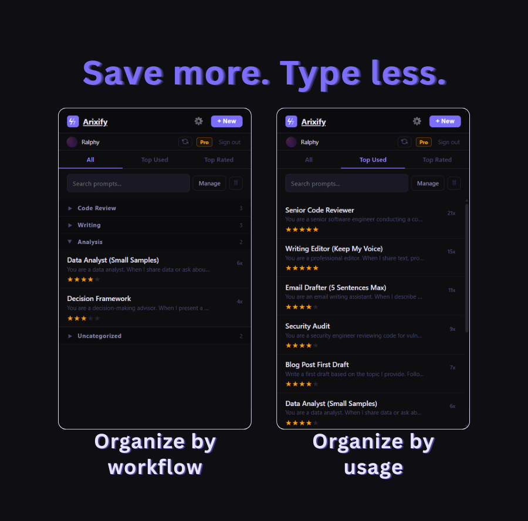

If you use ChatGPT, Claude, or any AI tool more than a few times a week, you have probably noticed a pattern: you keep writing the same instructions over and over. "Act as a senior developer." "Keep it concise." "Don't rewrite my code, just point out issues." Every session starts with the same setup, typed from memory, slightly different each time.
That repetition is a signal. The prompts you rewrite most often are the ones that actually work for you. They deserve to be saved somewhere you can find them in seconds, not reconstructed from memory every morning.
This guide walks through how to build a personal prompt library from scratch: what to save, how to organize it, and how to make it part of your daily workflow instead of another thing you set up once and forget about.

This is what a working prompt library looks like after a few weeks of use.
🤔 Why most people don't save their prompts
It sounds obvious: if a prompt works well, save it. But most people don't, for a few predictable reasons.
The first is friction. When you are mid-conversation with an AI, switching to a notes app to paste a prompt feels like an interruption. By the time you finish the conversation, you have already forgotten which version of the prompt worked best.
The second is format. Prompts saved in Notion, Google Docs, or random text files end up buried. You have a prompt somewhere in a doc titled "AI stuff" from three months ago, but finding it takes longer than rewriting it.
The third is false confidence. You think you will remember the prompt. You used it yesterday, it is only two sentences. But the next day you write something slightly different, and the output quality drops, and you spend five minutes tweaking instead of working.
A prompt library solves all three problems, but only if it is set up in a way that makes using it faster than not using it.
✋ Step 1: Start with just five prompts
The biggest mistake is trying to build a comprehensive library on day one. You open a spreadsheet, create 30 rows, and try to fill them all in one sitting. Two weeks later you have not looked at it once.
Start smaller. Think about the last week of AI conversations you have had. Which instructions did you type more than once? Those are your first five prompts.
For most people, the list looks something like this:
- A code review prompt that tells the AI to find bugs without rewriting everything
- A writing feedback prompt that preserves your voice instead of replacing it
- A summarization prompt with specific instructions about length and format
- A brainstorming prompt that forces the AI to ask clarifying questions before generating ideas
- A role-specific prompt for your most common task (data analysis, email drafting, research, etc.)
Five prompts is enough to feel the difference. When you sit down to work tomorrow and can pull up your code review prompt in two seconds instead of typing it from scratch, the value becomes obvious immediately.
Tip: If you cannot identify five prompts you reuse, try this: for the next three days, every time you type an instruction longer than one sentence into ChatGPT or Claude, copy it into a temporary note. At the end of three days, look for patterns.
♻️ Step 2: Write prompts that are reusable, not disposable
A prompt you save should work across multiple conversations without modification. That means it needs to be general enough to reuse but specific enough to be useful.
❌ Too specific (single-use):
Review my React login component for security issues.
The component uses OAuth2 and stores tokens in localStorage.This only works for that one component. Once the review is done, this prompt has no future value.
⚠️ Too vague (weak output):
Review my code and tell me if there are any problems.This produces generic feedback. The AI has no idea what kind of problems you care about.
✅ Reusable (save this one):
You are a senior software engineer conducting a code review.
Focus on: bugs, edge cases, security vulnerabilities, and
performance bottlenecks. Do NOT rewrite the code unless I
explicitly ask. Instead, point out specific issues with line
references and explain WHY each issue matters.This works on any codebase, any language, any project. It defines behavior (what the AI should do) rather than context (what specific code to look at). The context changes every time; the behavior stays the same.
📂 Step 3: Organize by workflow, not by topic
Most people organize prompts by topic: "Coding prompts," "Marketing prompts," "Writing prompts." That works at first, but it breaks down once you have more than 15 prompts.
A better approach is to organize by workflow: the specific task you are doing when you reach for a prompt.
- Code Review (prompts you use when reviewing your own or someone else's code)
- First Draft (prompts for generating initial content, emails, docs)
- Editing (prompts for refining text you have already written)
- Research (prompts for analyzing data, summarizing articles, fact-checking)
- Debugging (prompts for when something is broken and you need help finding the cause)
The difference is subtle but important. "Coding prompts" is a category. "Code Review" is a moment in your day. When you sit down to review a pull request, you don't think "I need a coding prompt." You think "I need my code review setup." Organizing by workflow matches how your brain actually looks for things.
⚡ Step 4: Make access faster than rewriting
This is where most prompt libraries fail. The library exists, the prompts are good, but using it takes too many steps. You have to open a different app, find the right document, scroll to the right section, copy the text, switch back to your AI chat, and paste. That is six steps. Rewriting the prompt from memory is one step.
For a prompt library to actually get used, accessing a prompt needs to be faster than rewriting it. That means it needs to live where you work: inside the AI chat interface, not in a separate app.
There are a few ways to achieve this:
- Browser extension that puts your prompts right next to the AI input field. One click, prompt injected.
- Text expander (like Raycast or Espanso) where you type a shortcut and it expands into your full prompt. Fast, but requires memorizing shortcuts.
- Pinned browser tabs with your prompts in a simple doc. Low-tech, but adds tab-switching friction.
The best system is the one you will actually use. If you are testing whether a prompt library is worth the effort, start with a pinned tab. If you find yourself reaching for it multiple times a day, upgrade to something with less friction.

🔧 Step 5: Iterate on your prompts over time
A prompt library is not a "set it and forget it" project. The prompts you save today will need adjustment as you discover what works and what does not.
Track which prompts you actually use. After a month, look at your library. If a prompt has not been used in four weeks, either it is not useful or it is not easy enough to find. Delete it or move it to an archive. A library of 10 prompts you use daily is more valuable than 50 prompts you never touch.
Refine based on output quality. When a prompt gives you a mediocre response, do not just accept it. Ask yourself what instruction was missing. Then update the saved version. Over time, each prompt gets more precise and the outputs get better without you having to think about it.
Version your best prompts. When you make a significant change to a prompt that is working well, keep the old version for a few days. Sometimes the "improvement" makes things worse in edge cases you did not test.
Tip: Some prompt managers (including Arixify) track how many times you have used each prompt. The usage data tells you which prompts are actually part of your workflow and which ones are just taking up space.
🤝 Step 6: Share selectively
Not every prompt should be shared, and not every shared prompt is worth using. Public prompt libraries (like the ones on Reddit or prompt-sharing sites) are full of prompts that sound clever but do not produce reliably good output.
Your personal prompt library is valuable precisely because it is personal. It is tuned to your writing style, your code standards, your analysis needs. A generic "act as a marketing expert" prompt from a public library will always be worse than a prompt you have refined over 50 conversations to match your specific audience and tone.
That said, sharing prompts with your team can be high-value. If your team uses AI for code review, having one shared code review prompt that everyone uses ensures consistent quality. The key is sharing prompts that define a process (how we do code review here) rather than prompts that define a preference (how I like my summaries formatted).
🏆 What a mature prompt library looks like
After a few weeks of building and refining, a useful prompt library typically has these characteristics:
- 10 to 20 active prompts. Not 100. Most people's daily AI usage maps to a surprisingly small number of repeated tasks.
- Organized by workflow. You can find the right prompt in under 5 seconds.
- Battle-tested. Each prompt has been used dozens of times and refined based on real output quality.
- Accessible in one step. The prompt goes from library to AI input field without tab-switching or copy-pasting.
- Regularly pruned. Unused prompts get removed. The library stays lean.
The goal is not to have the most prompts. It is to have the right 10 to 15 that you reach for every day without thinking about it.

Usage data tells you which prompts are part of your workflow and which ones are just taking up space.